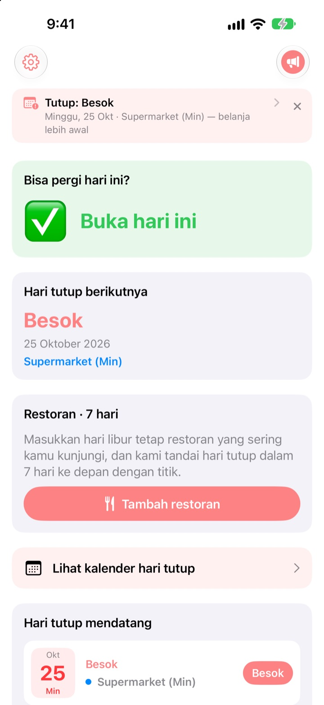
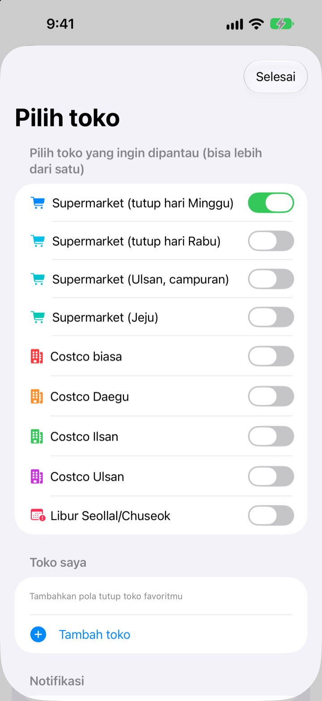
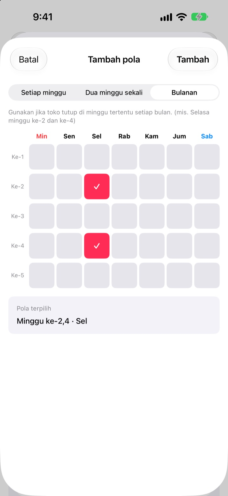
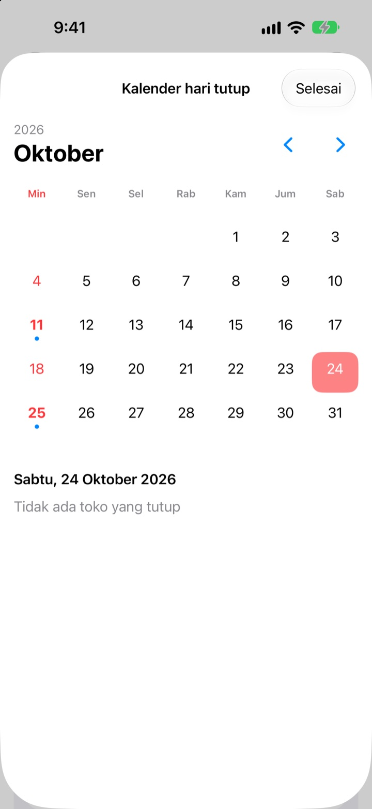
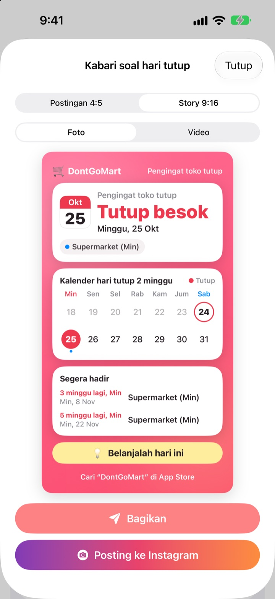

Sebelum berangkat belanja,
pastikan tokonya buka
Begitu aplikasi dibuka, yang pertama terlihat adalah apakah toko pilihanmu buka hari ini. Pengingat datang sebelum tiap hari tutup, jadi kamu tak akan lagi ketemu pintu terkunci.
Semua fitur gratis. Tanpa akun, tanpa iklan.

Coba dengan tokomu
Pilih toko dan langsung lihat apakah buka hari ini dan kapan tutup berikutnya. Dihitung dengan aturan yang sama seperti di aplikasi.
Pernah datang bawa daftar belanja tapi tokonya tutup?
Hipermarket di Korea wajib tutup dua hari tiap bulan, tapi harinya tergantung lokasi. Kebanyakan Minggu kedua dan keempat, ada yang hari Rabu, dan Ulsan serta Jeju punya aturan sendiri. Di Costco tergantung cabangnya. DontGoMart menghitung hari tutup sesuai aturan toko langgananmu dan langsung memberi tahu apakah hari ini bisa pergi.
Tepat di tiap daerah
Pilih toko yang tutup hari Minggu atau Rabu, atau daerah dengan jadwal sendiri seperti Ulsan dan Jeju. Costco biasa dan cabang Daegu, Ilsan, serta Ulsan diatur terpisah.
Hari tutup tepat saat Seollal dan Chuseok juga ditampilkan, dan kamu bisa memantau beberapa toko sekaligus.

Toko dekat rumah dan restoran langganan
Kalau toko tidak ada di daftar, tambahkan sendiri: tiap minggu, dua minggu sekali, atau minggu ke berapa dan hari apa dalam sebulan.
Untuk restoran, tempel tautan yang dibagikan dari Naver Map atau pilih tangkapan layar halaman infonya, dan hari libur rutinnya terisi otomatis. Teks di foto hanya dibaca di perangkatmu.

Pengingat dan widget supaya tak lupa
Dapatkan pengingat 1, 2, 3, atau 7 hari sebelumnya pada jam pilihanmu, dan sehari sebelumnya satu lagi bahwa hari ini waktu yang pas untuk belanja.
Widget di Layar Utama dan Layar Terkunci menampilkan hari tutup terdekat, apakah Minggu ini buka, dan tujuh hari ke depan restoranmu. Kalender menampilkan sebulan penuh.

Bagikan lewat satu kartu
Ubah info hari tutup jadi kartu berisi kalender dua minggu dan tips belanja, lalu kirim ke grup keluarga. Tersedia ukuran postingan dan story Instagram, juga video pendek.

Mulai dalam tiga langkah
- 1
Pilih toko
Aktifkan toko dan daerah tempatmu belanja. Sebanyak yang kamu mau.
- 2
Nyalakan pengingat
Tentukan berapa hari sebelumnya dan jam berapa.
- 3
Pasang widget
Cek dari Layar Utama atau Layar Terkunci tanpa membuka aplikasi.
Aturan tutup tiap toko
- Supermarket (tutup hari Minggu)
- Minggu ke-2 dan ke-4 · sebagian besar daerah
- Supermarket (tutup hari Rabu)
- Rabu ke-2 dan ke-4 · sebagian Gyeonggi, Cheongju
- Supermarket (Ulsan)
- Rabu ke-2, Minggu ke-4
- Supermarket (Jeju)
- Jumat ke-2, Sabtu ke-4
- Costco biasa
- Minggu ke-2 dan ke-4
- Costco Daegu
- Senin ke-2 dan ke-4 · Daegu, Daegu Innovation
- Costco Ilsan
- Rabu ke-2 dan ke-4
- Costco Ulsan
- Rabu ke-2, Minggu ke-4
- Seollal, Chuseok
- tutup tepat di hari itu
Hari tutup wajib ditetapkan pemerintah daerah dan bisa berubah. Kalau ada yang tidak cocok, kabari kami lewat email di bawah.
Pertanyaan umum
Hari tutupnya tidak sesuai kenyataan.
Hari tutup wajib hipermarket mengikuti peraturan daerah dan berbeda tiap wilayah. Cek di Pengaturan apakah jenis toko yang dipilih sudah tepat (tutup Minggu, tutup Rabu, Ulsan, Jeju, dan lainnya). Kalau masih tidak cocok, kirim nama toko dan daerahnya, kami akan memeriksanya.
Tokoku tidak ada di daftar.
Tambahkan sebagai toko sendiri. Pilih tiap minggu, dua minggu sekali, atau minggu ke berapa dan hari apa, misalnya Minggu kedua dan keempat.
Hari libur restoran tidak terisi dengan benar.
Saat impor lewat tautan Naver Map, halaman restoran harus mencantumkan hari libur rutinnya. Saat memakai tangkapan layar, pastikan tulisan soal hari tutup terlihat di layar. Semua bisa diubah sebelum disimpan.
Pengingat tidak muncul.
Pastikan notifikasi diizinkan di Pengaturan > Notifikasi > DontGoMart dan pengingat hari tutup sudah aktif di aplikasi.
Widget tidak diperbarui.
Buka aplikasi sekali dan widget akan diperbarui. Kalau masih sama, hapus widget lalu tambahkan lagi.
Apa itu tip?
Semua fitur DontGoMart gratis. Tip kopi, kue, dan makan siang adalah dukungan untuk pengembang. Setelah memberi tip, kamu akan melihat ucapan terima kasih dan lencana dengan jumlah tip.
Ke mana bertanya soal pembayaran atau pengembalian dana?
Pembelian di dalam aplikasi diproses Apple, jadi pengembalian dana diajukan di reportaproblem.apple.com. Untuk hal lain, kirim email ke kami.
Bagaimana dataku ditangani?
Tidak ada akun, iklan, atau alat pelacak, dan teks di tangkapan layar hanya dibaca di perangkatmu. Detailnya ada di Kebijakan Privasi di bawah.
Ada pertanyaan atau ide? Kirim ke hyunho.lee.1993@gmail.com. Biasanya kami membalas dalam satu atau dua hari.